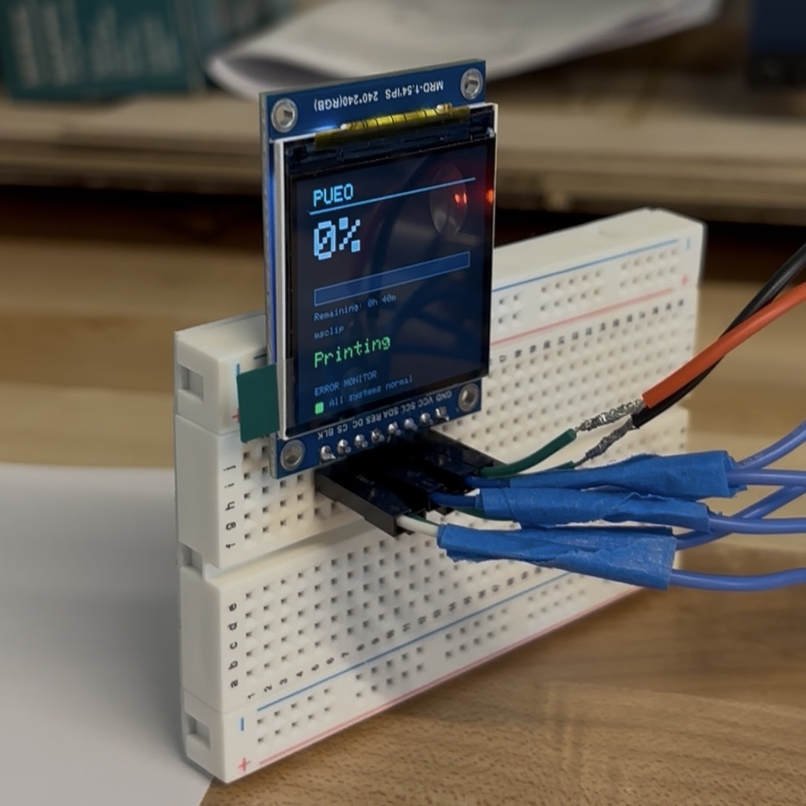
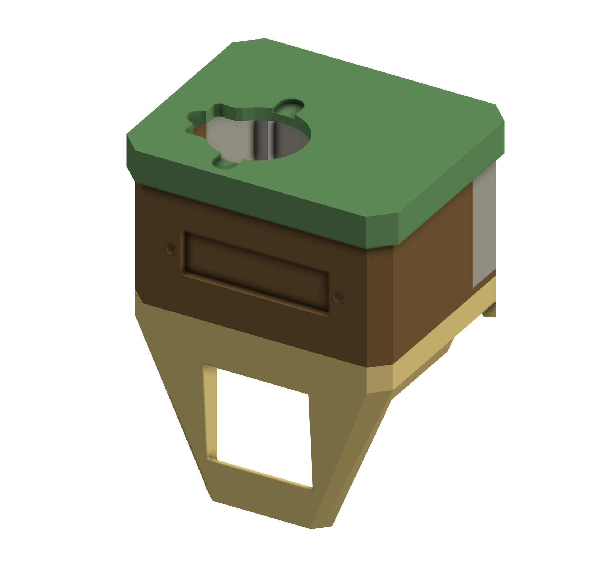
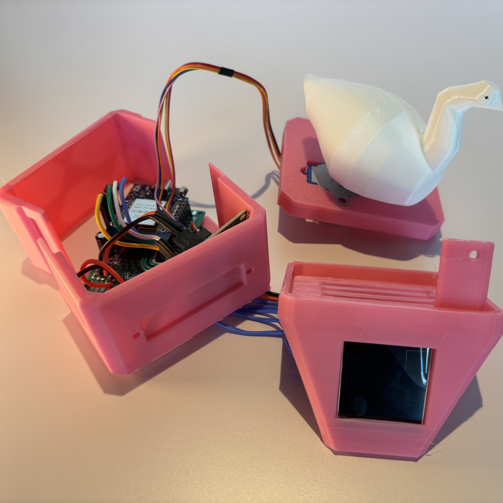
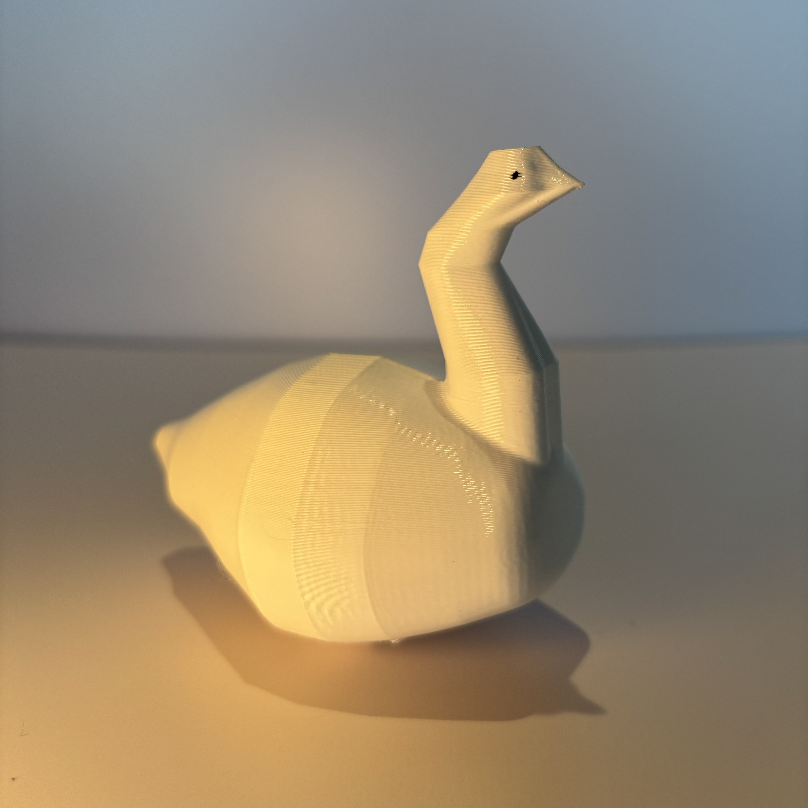

Design a compact monitor that sits on a BambuLab X1C printer that alerts the user to print completion and errors.
⚙ Onshape
⚙ BambuLab X1C 3D Printer
⚙ Measurement
⚙ Electronics
⚙ Graphic Design
Designed and prototyped over a 1 month period during my makerspace internship at the Lili'uokalani Center.
Concept
Printers are Birds
Upon learning that the 3D printers in the makerspace were given the Hawaiian names of bird species, I wanted to design monitors that could sit in front of the AMS and alert users to the print status. The "alert" would be a 3D model of the corresponding bird that would spin vigorously when the print finished or if an error occurred.

Recipe
Passion for Enclosures
The monitor's size was the primary design constraint. Curating the appropriate electronic components and designing a compact enclosure was a lot of fun—I designed 5 different iterations of the enclosure before settling on a design that makes disassembly and maintenance quick.

Feedback
It's Alive
The bird I designed didn't look like the actual bird species, but that is because I have never CADed a bird before. If I could design the device over again, I would experiment with E-ink displays to minimize the power consumption as well as conform to the overall aesthetic of the makerspace.


